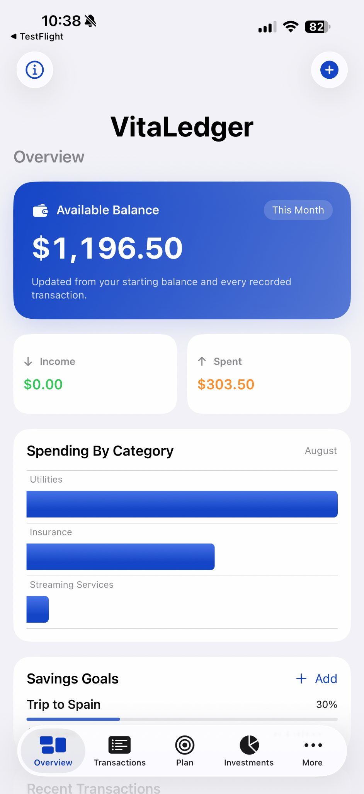
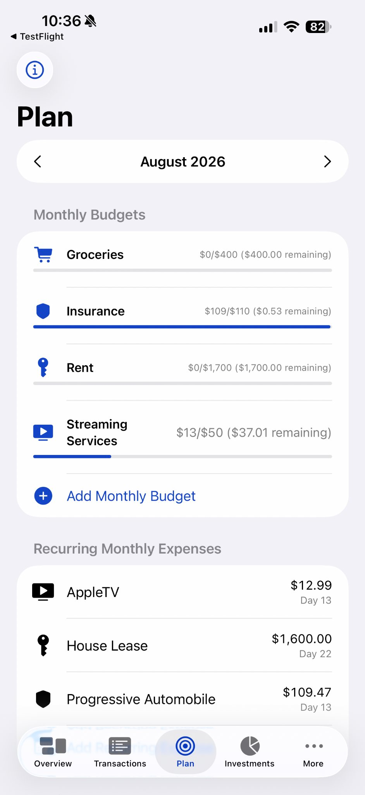
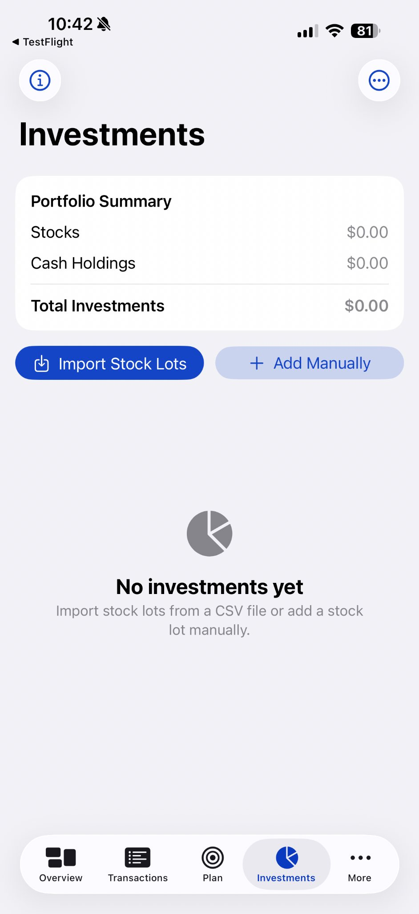
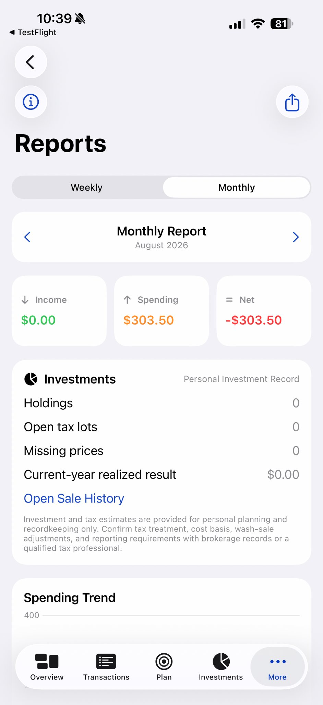
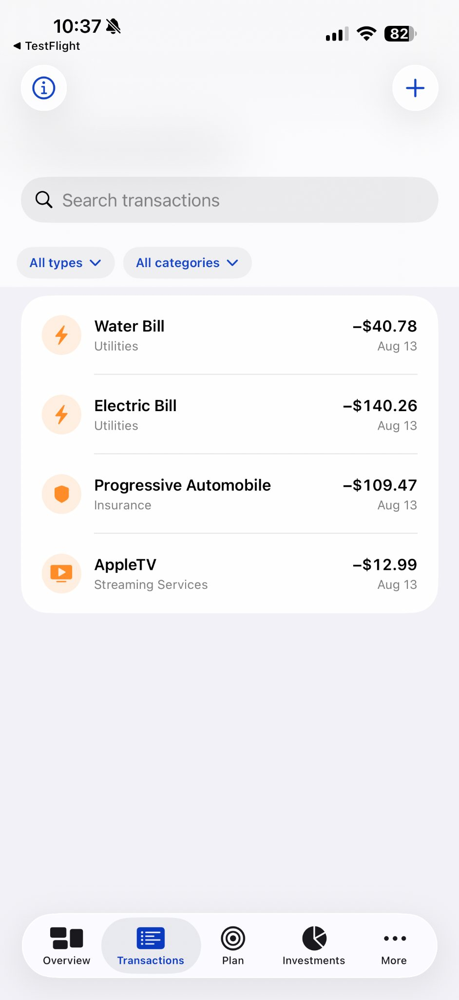
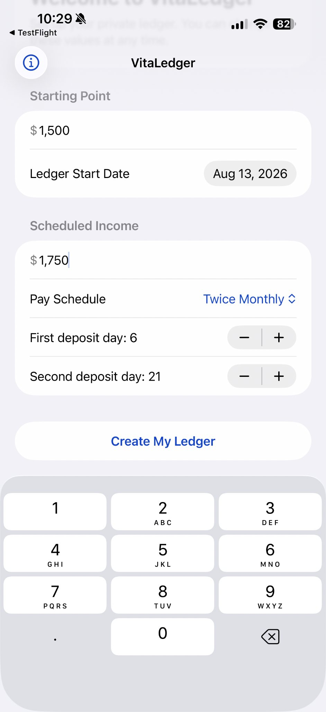
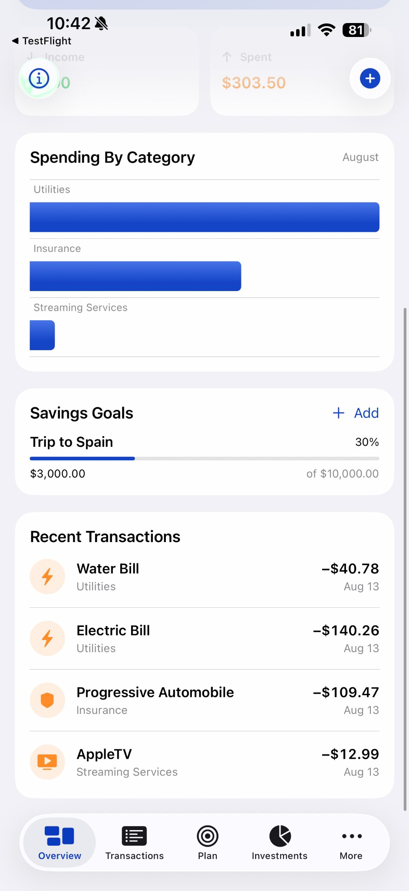
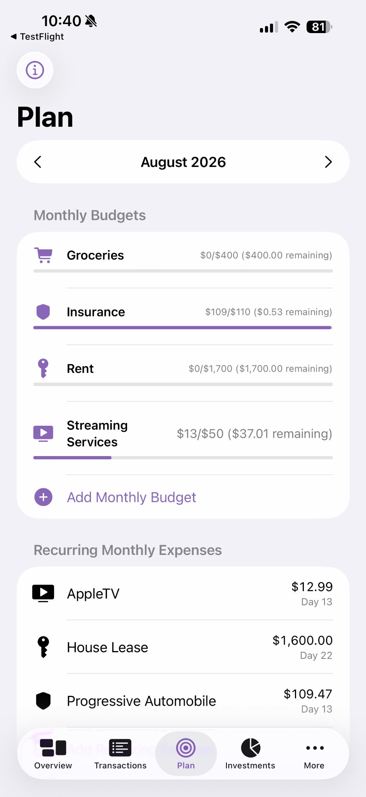

Income & Expenses
Record transactions with organized categories, dates, notes, and payment details for a clearer picture of everyday activity.
PRIVATE PERSONAL FINANCE
Organize income, expenses, budgets, savings goals, recurring expenses, stock records, and cash holdings without connecting VitaLedger to your bank or brokerage.

EVERYDAY MONEY
VitaLedger keeps the practical pieces of personal finance together without turning simple recordkeeping into a financial-services maze.
Record transactions with organized categories, dates, notes, and payment details for a clearer picture of everyday activity.
Set monthly spending limits and compare actual expenses against the plan to see which categories deserve attention.
Keep financial goals visible, record progress, and turn long-term intentions into something you can actually track.
Track subscriptions, bills, and repeating expenses so upcoming obligations are easier to anticipate.
BUDGETS & RECURRING EXPENSES
Monthly budgets, recurring expenses, and savings goals live together in a practical planning view, while transaction activity automatically feeds the financial picture.


STOCK INVESTMENTS
Maintain your own records of stock holdings and individual purchase lots. Add lots manually or import supported CSV files, enter current prices, review cost basis, estimate unrealized gains or losses, and record stock sales.
CASH HOLDINGS
Track balance-based investments and cash equivalents separately from stocks, including savings accounts, money market accounts, brokerage cash sweeps, Certificates of Deposit, and other cash holdings.


INVESTMENT SUMMARY
See stock values and cash holdings separately, along with a combined Total Investments figure that contributes to a broader financial picture.
REAL SCREENS. REAL RECORDKEEPING.
VitaLedger keeps setup, planning, transactions, reports, and investments within one consistent personal-finance workspace.

Choose a starting balance, ledger date, and optional scheduled income.

Review spending categories, goal progress, and recent activity at a glance.

Keep monthly budgets and repeating expenses visible before they arrive.
Use weekly and monthly reports to understand spending and investment records.
PRIVACY-FIRST DESIGN
VitaLedger stores your financial records locally on your device and does not require bank credentials, brokerage credentials, or external financial-account connections. Optional device authentication can add another layer of protection for investment information.
ACCESSIBLE & PERSONAL
VitaLedger supports light and dark appearances, adaptable text, and Spanish localization. It is designed for people who want straightforward personal recordkeeping without handing financial-account access to an outside service.
VitaLedger is intended for personal organization, planning, and recordkeeping. Investment, interest, gain/loss, and tax-related figures are estimates and should be confirmed against official financial-institution records or with a qualified professional.
VITALEDGER
Budgeting, savings goals, recurring expenses, stock records, and cash holdings in one private personal ledger.